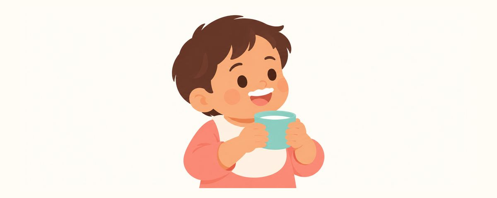

컵으로 마시기 연습: 언제 시작하고 젖병은 언제 뗄까요
생후 6~9개월이면 도움을 받아 컵으로 마실 수 있어요. 빨대컵·오픈컵 고르는 법, 흘려도 괜찮은 연습 요령, 늦어도 18개월까지 젖병을 떼는 순서를 정리했어요.
한눈에 보기
- 빨대컵이나 오픈컵으로 연습해요
- 젖병은 늦어도 18개월까지 떼요
- 컵에 주스나 단 음료를 담아 다니지 않아요
젖병에 익숙한 아기에게 컵을 내밀면 대부분 흘리고, 뱉고, 장난을 쳐요. 그래서 "아직 이른가?" 싶어 미루게 되지요. 하지만 컵 연습은 일찍 시작할수록 젖병 떼기가 쉬워져요. 언제, 어떤 컵으로, 어떻게 연습하면 좋은지 정리했어요.
컵 연습이 이에도 중요한 이유
생후 6~9개월이면 아기는 부모가 잡아 주는 도움을 받아 컵으로 마실 수 있어요. 처음엔 반은 흘리지만, 지금부터 컵에 익숙해지면 돌 무렵 젖병 떼기가 훨씬 쉬워요.
젖병을 오래 쓰면 이에 좋지 않은 습관이 함께 따라오기 쉬워요. 젖병에 단 음료를 담아 들고 다니며 조금씩 마시거나, 잠들 때마다 젖병을 찾는 습관이에요. 이렇게 되면 이가 당분에 닿는 시간이 길어져 충치 위험이 높아져요. 특히 잠든 동안에는 침이 줄어 입안을 씻어 주는 힘이 약해지기 때문에, 젖병을 물고 자는 습관은 앞니 충치의 큰 원인이 돼요.
그래서 12개월 무렵 젖병 떼기를 시작해 늦어도 18개월까지 마치는 것을 목표로 해요.
컵은 빨대컵이나 오픈컵을 권해요. 꼭지가 달린 스파우트컵은 빠는 방식이 젖병과 비슷해서, 나중에 다시 떼야 하는 또 하나의 젖병이 되기 쉬워요. 처음부터 빨대컵이나 오픈컵으로 연습하면 두 번 바꿀 필요가 없어요.
흘려도 괜찮아요, 이렇게 연습해요
처음 연습은 이렇게 해 보세요.
- 식사 시간에 아기를 의자에 바르게 앉히고 턱받이를 해요.
- 작은 오픈컵에 물이나 분유를 바닥이 살짝 덮일 만큼 조금만 담아요.
- 부모가 컵을 함께 잡고 아기 입술에 대어 준 뒤, 아주 천천히 기울여요.
- 한 모금 넘기면 잠시 쉬었다가 다시 해요. 사레가 들지 않게 서두르지 않아요.
- 익숙해지면 아기가 손잡이를 잡게 하고 부모는 바닥만 받쳐 줘요.
빨대컵은 빨대를 빠는 힘이 필요해서 처음엔 잘 안 될 수 있어요. 아기가 빨대를 입에 물고 있을 때 부모가 컵을 살짝 기울이거나 눌러 물이 조금 나오게 도와주면 금방 요령을 익혀요.
흘리는 건 연습의 일부예요. 옷과 바닥이 젖어도 괜찮도록 미리 준비하고, 잘 마신 순간을 크게 칭찬해 주세요.
돌이 되면 젖병을 컵으로 바꿔 가요. 낮 젖병부터 하나씩 컵으로 바꾸고, 잠들기 전 젖병처럼 아기가 가장 의지하는 밤 젖병은 마지막에 떼요. 밤 젖병을 뗄 때는 수유를 잠자리에서 조금 떨어진 곳에서 하고, 다 마신 뒤에 이를 닦고 재우는 순서로 바꿔 보세요.
젖병을 뗄 때 부모가 자주 하는 실수도 있어요.
- 모든 젖병을 하루아침에 치우는 것. 아기가 힘들어하면 부모도 지쳐 다시 젖병을 꺼내게 돼요. 하나씩 바꾸는 편이 오히려 빨라요.
- 젖병 대신 스파우트컵으로만 바꾸는 것. 빠는 방식이 비슷해서 결국 한 번 더 떼야 해요.
- 컵을 하루 종일 손에 들려 주는 것. 마시는 건 식사와 간식 때로 정하고, 그 사이 목이 마르면 물을 줘요.
젖병을 떼는 동안 아기가 보채는 건 자연스러운 일이에요. 안아 주고 놀아 주며 젖병이 주던 위안을 다른 방법으로 채워 주세요.
자주 묻는 질문
컵 연습은 언제부터 시작하나요?
이유식을 시작하는 무렵부터 해 볼 수 있어요. 생후 6~9개월이면 도움을 받아 마실 수 있으니, 식사 때 조금씩 맛보게 해 주세요.
빨대컵과 오픈컵 중 무엇이 좋을까요?
둘 다 권해요. 아기가 편해하는 것부터 시작하고, 가능하면 둘 다 경험하게 해 주세요. 꼭지가 달린 스파우트컵만 피하면 돼요.
컵에는 무엇을 담아 주나요?
물과 모유·분유를 담아요. 12개월 전에는 과일주스를 주지 않고, 그 뒤에도 단 음료를 컵에 담아 들고 다니게 하지 않아요.
밤 젖병을 도저히 못 떼겠어요.
밤 젖병은 가장 마지막에 떼는 게 자연스러워요. 낮 젖병을 먼저 정리하고, 밤에는 수유 뒤 이를 닦고 재우는 순서를 지키면서 천천히 줄여 가요.
이럴 땐 상담받아 보세요
- 18개월이 지나도 젖병 떼기가 어려울 때
- 컵으로 마실 때 자주 사레가 들릴 때
- 젖병을 물어야만 잠드는 습관이 계속될 때
- 위 앞니 잇몸 근처에 하얀 띠나 갈색 점이 보일 때
시기마다 알림으로 받아 보세요
치아달력 앱에 생일(또는 출산 예정일)을 넣으면 이 글들이 필요한 때에 맞춰 알림으로 와요. 가입 없이 무료로 쓸 수 있어요.
출처
이 글의 정보는 일반적인 교육 목적이며 진료를 대체하지 않습니다. 아이의 상태에 대해서는 치과의사와 상담하세요.